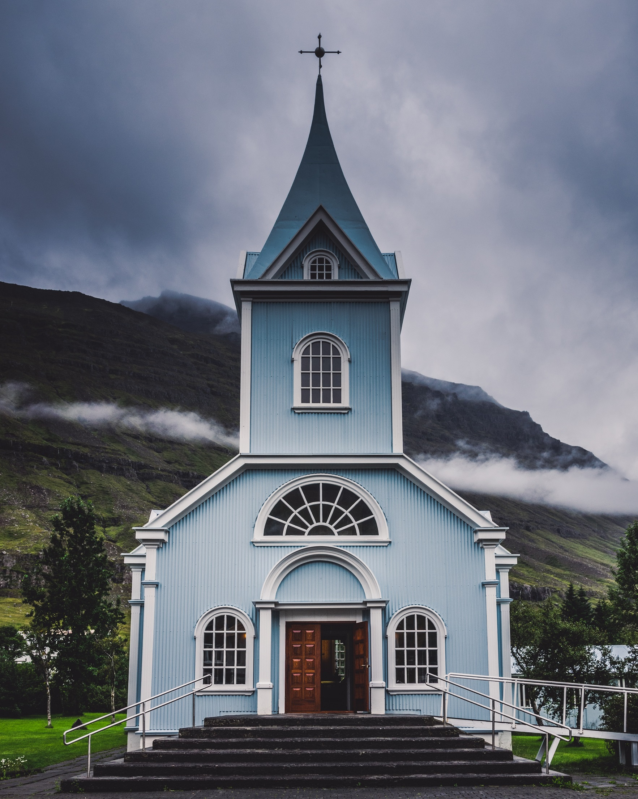

<div class="container my-4">
  <div class="d-flex justify-content-between align-items-center gap-4">
    <div class="img-box">
      
    </div>

    <div>
      <h1>
        Igreja Assembleia de Deus Ministério El Shaddai Nacional (AD El Shaddai)
      </h1>
      <p>
        A Igreja com sede inscrita no CNPJ: 06.223.126/0001-01, situada Rua
        Príncipe, 20 Vila Lourdes - Carapicuíba/SP foi fundada no ano de 2002
        pelo então pastor presidente NOME_DO_PRIMEIRO_PASTOR na cidade de
        Flórida nos Estados Unidos.
      </p>
      <p>
        Após aproximadamente TEMPO_PASTOR_PASSOU_PRESIDENCIA anos o pastor
        NOME_DO_PRIMEIRO_PASTOR passou a presidência do ministério ao novo
        presidente, e ainda atual, pastor Manuel Batista. Atualmente AD El
        Shaddai, é formada pela sua sede e mais NUMERO_DE_CONGREGACOES
        congregações, nos Estados de São Paulo, Paraná e Rio Grande do Norte.
      </p>
    </div>
  </div>
</div>
